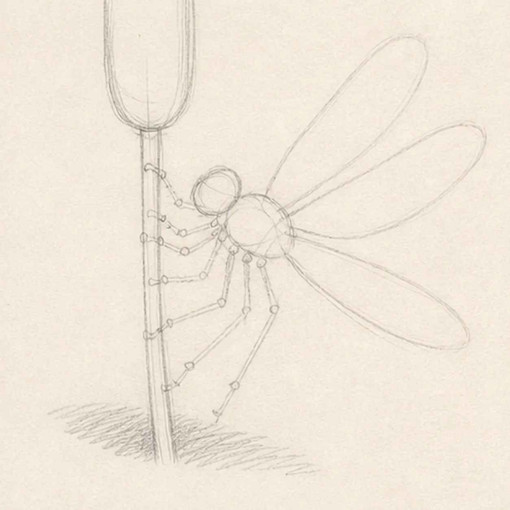
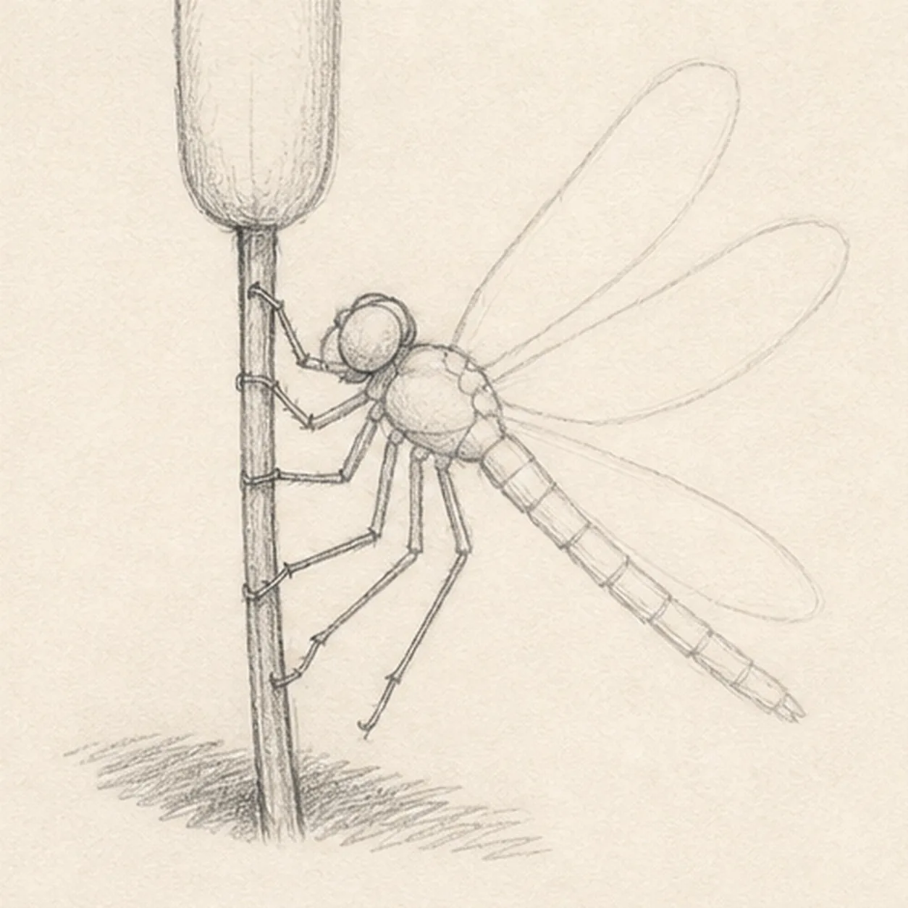
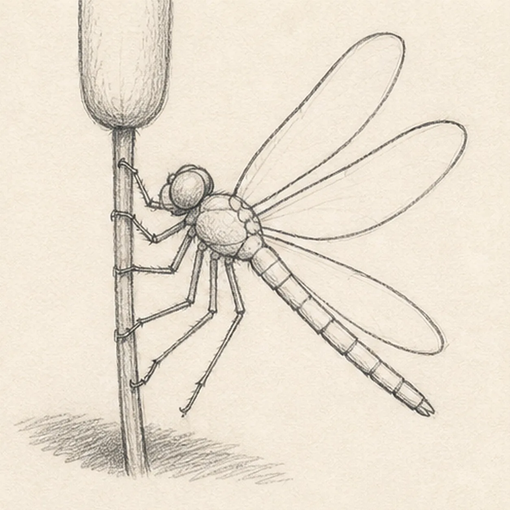
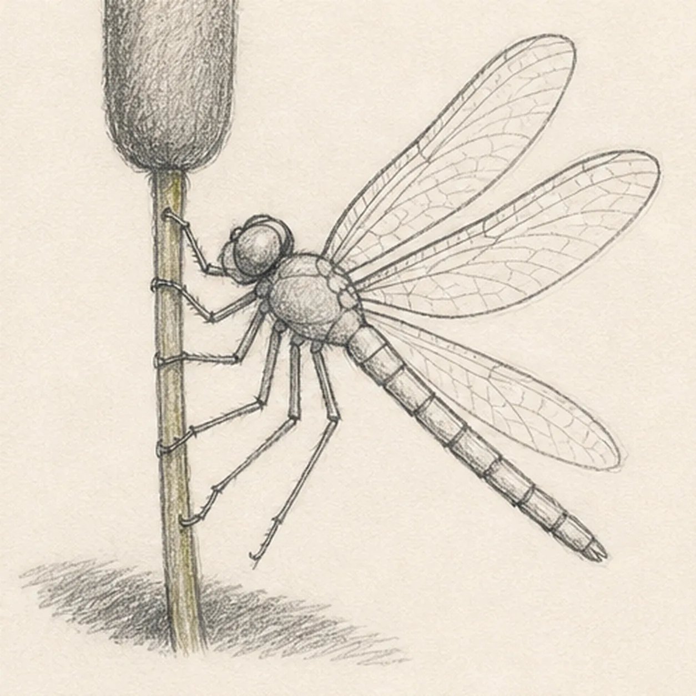
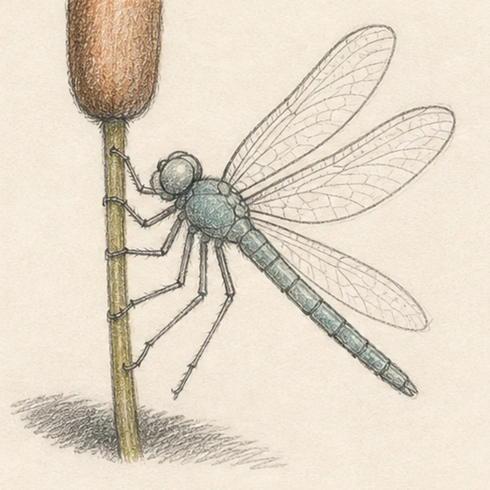

Pencil ready?
Let's draw a dragonfly on a cattail
Treat this as one small practice round: build the subject lightly, notice the shapes, then darken only the lines that help the finished sketch.
-
01

Map the perch and wing span
Use pale graphite to place the vertical cattail and seed head, the dragonfly's head-thorax-abdomen axis, exactly four separate wing envelopes, exactly six bent leg routes, and a broken shadow footprint.
Sketch tip: Ghost the four wing arcs before touching down and leave clear paper gaps between them. Reserve the stem gaps behind the thorax and four contacting legs now so no later keeper line needs erasing.
-
02

Shape the body and cattail
Wrap the guides with one cattail stem and seed head plus the rounded head, compact thorax, and tapered segmented abdomen, preserving all four wing envelopes and six leg routes.
Sketch tip: Simplify the insect into three body masses first, then compare the long empty wedge between the lower wing and abdomen. Keep the seed head tall enough to balance the dragonfly without crowding it.
-
03

Set four wings and six legs
Clarify exactly four transparent wing contours and six bent legs: four touch the stem while two balance below the thorax on their reserved routes.
Sketch tip: Count the wings and legs before darkening. Rotate the page for the longest wing pulls, and stop the stem behind each contacting leg so the grip reads through overlap rather than cleanup.
-
04

Build the light wing texture
Add a simplified wing-cell vein rhythm, abdomen bands, short graphite hatching on the cattail seed head, and the established broken shadow without changing any counts.
Sketch tip: Draw a few long support veins first, then bridge them with sparse shorter cells. Let some cells stay larger than others so the wings feel observed and handmade instead of mechanically netted.
-
05

Glaze the summer color
Layer restrained teal over the established body, rust brown over the seed head, and olive over the stem while leaving the four wings mostly open paper.
Sketch tip: Pull color along the body segments and stem, using two light layers instead of one hard pass. Keep the wing membranes nearly white so the graphite veins remain airy at thumbnail size.
-
06

Let the dragonfly shimmer
Strengthen selected keeper contours, deepen the existing vein and body hatching, balance the established colors and shadow, clarify highlights, and soften only pale guides that distract.
Sketch tip: Count four wings, six legs, one seed head, and one segmented abdomen before stopping. Change the accent colors if you like, but keep the open wing gaps and the same stable perch easy to read.